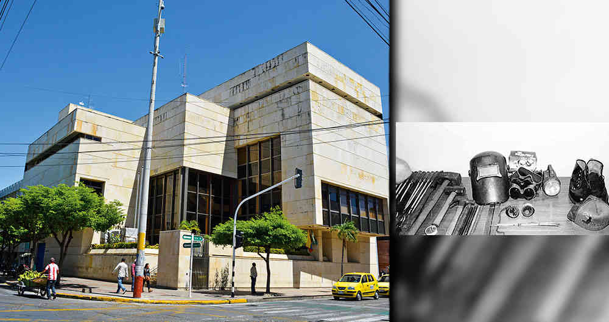
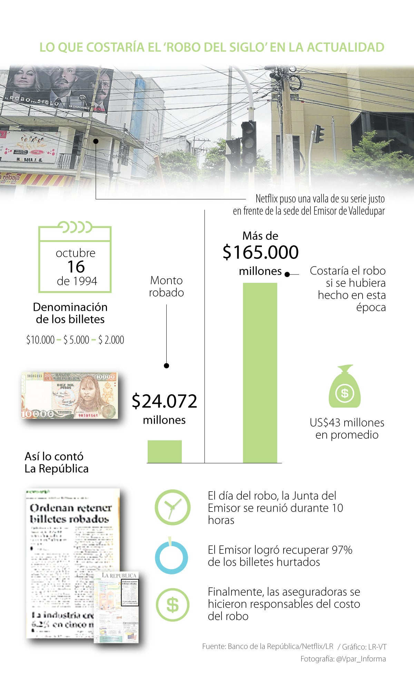

Pablo González, C.S prince
Elenco:Andrés Parra , Christian Tappan , Marcela Benjumea , Juan Sebastián Calero , Waldo Urrego , Rodrigo Jerez , Katherine Vélez , Paula Castaño , Pedro Suárez , Édgar Vittorino , Ramsés Ramos , Juan Pablo Barragán
Géneros:De Colombia, Series sobre crimenes, Thrillers de TV
El robo de siglo’ se llevó a cabo el 16 de octubre de 1994 en la bóveda principal de la sede Valledupar del Banco de la República. Tras varios meses de inteligencia, complicidad de empleados y de la misma policía, una banda de ladrones sacó $24.072 millones.
-Foto tomada de Revista semana
-Foto tomada de El Tiempo
-Foto tomada de El Tiempo
La relevancia del hecho se revela al revisar que, teniendo en cuenta el aumento de la inflación de los últimos 25 años, hoy, el monto hurtado superaría $165.000 millones. Esta cifra sobrepasa el presupuesto de inversión para la cultura que el Gobierno propuso para 2021 ($146.000 millones); se equipara a los recursos que usa la Fiscalía ($170.00 millones); y es la mitad de lo que tendría el sector de ambiente y desarrollo sostenible, y lo dispuesto para deporte.
Aunque $18.560 millones del total robado no habían sido emitidos, es decir, no tenían validez, después de una reunión de 10 horas (la más larga que haya tenido una Junta del Banco), se optó por avalar su circulación para defender la buena fe de los terceros; y también se les pidió a quienes recibieran los ‘vallenatos’, entregarlos al Emisor para cambiarlos por otras unidades. “Hubo casos de personas que tramitaron los cambios, pero nunca fueron”, mencionó.
Información sacada de www.larepublica.coVer Más